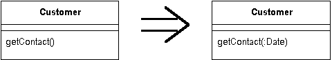

Add Parameter
A method needs more information from its caller.
Add a parameter for an object that can pass on this information.

For more information see page
275
of
Refactoring
| Refactoring Home |
| Alphabetical List |